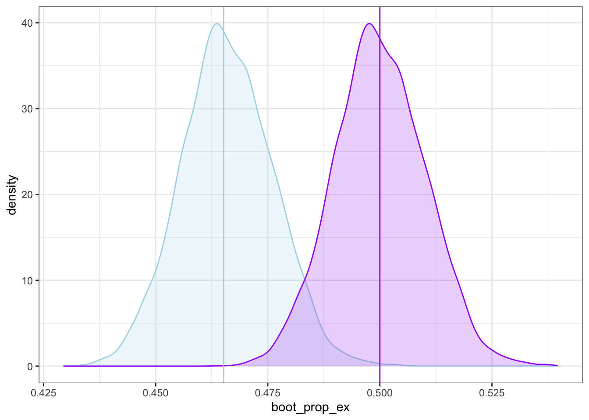
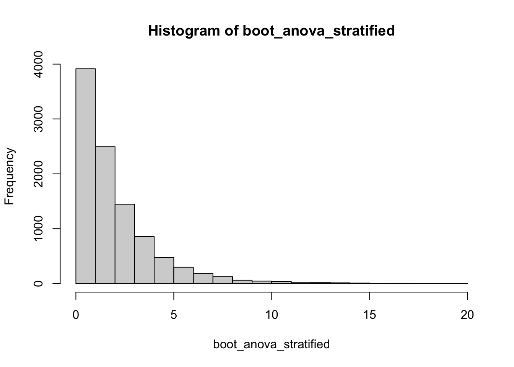

The statistical procedure known at the bootstrap was born out of Brad Efron’s work in 1979. The bootstrap is named after the hyperbolic phrase “pulling yourself up by your bootstraps” – a physical act that would be impossible – because the bootstrap seems to work in a somewhat unbelievable manner for accomplishing statistical inference.
We know that most of the inferential statistics that we have seen previously have been based on knowing theoretical properties of sampling distributions, then working to align our construction of confidence intervals or test-statistics with these known distributions (example knowing CLT and using that for confidence intervals). This is why many of our tests focus around the used of means and proportions, because they have well known properties in large sample sizes. But how do we do inference if the behavior of the sampling distribution isn’t already known? Bootstrapping is one possible solution.
4.2 Bootstrap Sampling
Normally we would repeatedly sample from the population and compute our summary statistic of interest. This would tell us what values we can expect from repeated random samples and how uncertain we should be in any particular sample we have. Formally, a sampling distribution for a sample statistic is the probability structure for outcomes of the statistic in repeated sampling from the population. If we don’t have theoretical properties that tell us how that will behave, our solution is simple… just sample repeatedly from the population to find out the distribution of sample statistics. Wait. That is not very practical, since we used our available resources to collect our one real dataset.
In bootstrapping, we exchange the idea of resampling from our population, and instead resample from our sample with replacement! In essence, we take the sample that we have and treat it as the entire population (more specifically because our sample is probably small to be a population, we treat many copies of our sample as the population). Then by repeatedly sampling with replacement (each time we will get a different subsample), we can get the randomness from sample to sample that the sampling distribution represents (takes account of). If the sample is representative, then the population should behave like many copies of my sample.
Terminology: A bootstrap sample is a random resampling of \(n\) from the \(n\) observations in our original sample, with replacement. The summary statistic that you calculate from a bootstrap sample, is the bootstrap statistic. The distribution of bootstrap statistics that you obtain by repeatedly generating bootstrap samples is called the bootstrap distribution.
The amazing thing about the bootstrap distribution is that the shape and spread of the bootstrap distribution are surprisingly good estimate for the shape and spread of the sampling distribution for the same summary statistic. The primary difference is that instead of sampling distribution having an expected value equal to the population parameter, the bootstrap distribution has an expected value equal to the original sample statistic.
So suppose you have a summary statistic that doesn’t have a known sampling distribution. How can you do inference? Generate a bunch of bootstrap samples, use these to compute the bootstrap statistics, then use the variability estimates from the bootstrap distribution as approximations to help us build intervals or p-values.
Bootstrap is centered at the sample statistic, rather than the true population statistic (so it is a bit off); but the variability (i.e. spread) of the bootstrap distribution is a very good stand-in for the variation in the sampling distribution. The shape of the bootstrap distribution is also well mimicked. And the larger original sample that we have / more representative of the population that it is, the better the estimates are of the true variability. So we assume that the location of our intervals and test statistics come from the sample, but we want to get the variability information (e.g. standard errors) from our bootstrap distribution. We can do this for lots of different scenarios that we would have no idea what the theoretical properties are, but with bootstrapping we can still do inference. It makes inference much more flexible and computation focused (rather than theoretical) and we can estimate distribution forms that were not previously possible, we just need to be able to resample.
In short, bootstrapping generates a sampling distribution from the sample. The variability is from the resampling (each bootstrap sample sometimes hits subjects more often). So there is a point estimate from the real data for the summary statistic (like in any other setting), say the 80th percentile, then construct bootstrap confidence intervals using variability estimates from the bootstrap distribution.
Compared to the traditional frequentist CI, bootstrapping is a different method for estimating the same thing (so it is a different type interval). There is lots of theory underpinning bootstrapping and when it works well / doesn’t work, but there is no general rule for when bootstrapping would be better than frequentist / bayesian methods. However, bootstrapping is surprisingly good in a wide variety of settings.
Although it still cannot really handle small samples. Yes it doesn’t need an assumption of large sample for CLT, but it is unlikely that a small sample of say 10 observations will be representative of any population, variability will be high. But we can still perform the inferences.
4.3 Examples
4.3.1 Simple example
Here is a simple example to show how to get a bootstrap sample.
# lets explore what a bootstrap sample looks like# original samplesimple_data<-data.frame(row =1:5, value =c(7,6,9,12,11))simple_data
row value
1 1 7
2 2 6
3 3 9
4 4 12
5 5 11
# single bootstrap samplesimple_data[sample(1:5, replace =TRUE), ]
row value
2 2 6
3 3 9
2.1 2 6
5 5 11
2.2 2 6
# row names are indexed by the number of additional times they are included# -> so 3.1 means the second time the third obs was included in the sample
Note that only 5 obs would obviously not be a good representative of any important population of interest. So lets work with a bigger dataset and a complex statistic.
4.3.2 Principal compenent bootstrap
Olive oil dataset contains 8 numeric columns of different acids and suppose we want to do some kind of dimension reduction technique, specifically principal component analysis (PCA).
Instead of 8 dimensions explaining the differences / relationships between olive oils, perhaps only 2 or 3 dimensions could explain just as much information.
One feature of PCA is that is uses the variance-covariance matrix, which is unit-dependent. So currently if we attempt to rotate this space, oleic (whose scale is much bigger) will highlight more than the others. Instead we can use the correlation matrix, which is unit-free, to remedy this. Thus when figuring out the relationships between variables, it uses these unitless z-scores instead it will treat all 8 as equally important.
princomp() performs the PCA. It also gives us standard deviations, which we can turn into variance by squaring. These are then very interpretable. By using the correlation matrix, the sum of the variances equals the number of original dimensions. And the ratio of the variance to the original dimension is the proportion of variability explained by each respective principal component.
# perform PCA# -> x os the matrix we are trying to reduce and we want to use the correlation matrixoo_pca<-princomp(x =oliveoil[3:10], cor =TRUE)# check sum of variances and calculate proportion of the variances explained for each principal componentsum((oo_pca$sdev)^2)
For example, the interpretation of this summary statistic is that 46.5 % of the variability found in 8 dimensions can be explained by the first principal component. And 68.6 % can be explained by the first two and so on.
The first principle component variability percent is what we are going to bootstrap. We can’t be super certain that our one particular value is the correct value, but it is definitely an interpretable summary that we can study.
Goal: collect the bootstrap statistics from 10,000 bootstrap samples for that proportion of variability explained.
# initialize itemsB<-10000boot_prop_ex<-rep(NA, B)# loopfor(bin1:B){# create bootstrap sampleboot_samp<-oliveoil[sample(1:nrow(oliveoil), replace =TRUE), ]# calculate PCAoo_pca<-princomp(x =boot_samp[3:10], cor =TRUE)# save explained variability of first principal componentboot_prop_ex[b]<-((oo_pca$sdev)^2/sum((oo_pca$sdev)^2))[1]}# view resultshist(boot_prop_ex)
Min. 1st Qu. Median Mean 3rd Qu. Max.
0.4245 0.4589 0.4657 0.4658 0.4726 0.5057
4.3.3 Bootstrap inference
Then we can get a central bootstrap interval by getting the lower and upper quantiles of the middle, say 90%, of bootstrap statistics. Replace bootstrap distribution with sampling distribution and we have a confidence interval (they are analogous). This bootstrap interval should have the same width as a regular confidence interval built from resampling the population and the sampling distribution, just centered at the sample statistic instead of the true mean.
# central boootstrap intervalquantile(boot_prop_ex, c(0.05, 0.5, 0.95))
5% 50% 95%
0.4491787 0.4657085 0.4827787
If wanted to do official hypothesis test, this is the logic (called inverting the test, generate from the sample instead of the sampling distribution):
Suppose the bootstrap distribution is centered at the sample statistic \(S\). The shape and spread are exactly like what the true sampling distribution would be.
Now suppose there is a hypothesized value, say \(S_0 = 0.5\). This is where the sampling distribution should be centered. We know the variability we should see around that value.
So \(S_0\) being in the tail of the bootstrap distribution is like \(S\) being in the tail of the sampling distribution. We are inverting the roles of the test statistic and the center point. We can use this to do testing.
Being way out in the tails is evidence that the hypothesized value probably isn’t the true value; same logic as regular hypothesis test. Formally, we could actually shift all the points in the bootstrap dist and calculate a p-value.
# shift bootstrap distribution to S_not# -> calculate sample statistic found earlier (in one line!)S<-(princomp(x =oliveoil[3:10], cor =TRUE)$sdev)^2%>%magrittr::divide_by(sum(.))%>%.[1]S_not<-0.5boot_prop_ex_inverted<-boot_prop_ex+(abs(mean(boot_prop_ex)-S_not))# calculate p-valuemean(boot_prop_ex_inverted<=S)
[1] 0.0001
# visualize shiftggplot()+geom_density(aes(x =boot_prop_ex), color ="lightblue", fill ="lightblue", alpha =0.20)+geom_density(aes(x =boot_prop_ex_inverted), color ="purple", fill ="purple", alpha =0.20)+geom_vline(aes(xintercept =S), color ="lightblue")+geom_vline(aes(xintercept =S_not), color ="purple")+theme_bw()

4.3.4 F-test bootstrap
Use bootstrapping to reproduce the following ANOVA F-test for the difference in overall mean Palmitic Acid for olive oils in different macro areas.
# find alternative bootstrap to a common testmod<-lm(stearic~macro.area, data =oliveoil)anova(mod)
Analysis of Variance Table
Response: stearic
Df Sum Sq Mean Sq F value Pr(>F)
macro.area 2 1273 636.7 0.4707 0.6248
Residuals 569 769685 1352.7
# loop to collect the boostrap statistics of the F stat from 10000 bootstrap samplesboot_anova<-sapply(X =1:B, function(X){# generate bootstrap sample# -> fit model# -> anova table# -> extract F-statoliveoil[sample(1:nrow(oliveoil), replace =TRUE), ]%>%{lm(stearic~macro.area, data =.)}%>%anova%>%.[1, 4]})
Error in oliveoil[sample(1:nrow(oliveoil), replace = TRUE), ] %>% {: could not find function "%>%"
Error in eval(expr, envir, enclos): object 'boot_anova' not found
# compare our p-value to the original by finding prob F > original sample Fmean(boot_anova>=lm(stearic~macro.area, data =oliveoil)%>%anova%>%.[1,4])
Error in eval(expr, envir, enclos): object 'boot_anova' not found
# same conclusion as the original F-test
This also demonstrates that we won’t always get symmetric bootstrap distributions. It depends on the statistic we are studying, the skewness in the population, the sample size, etc. (the same factors as usual for sampling distributions).
Additionally, we have been doing thus far is the simple bootstrap. We can try other sampling techniques as well. Another strategy would be to do a stratified sample rather than sampling with replacement for the whole sample. This would entail bootstrapping within each group, so the group sample sizes of macro.area are the same in our bootstrap samples as in the original sample.
# collect a single stratified bootstrap sample# -> split by macro.area, bootstrap within each, then combine results back togethersample_stratified<-oliveoil%>%split(.$macro.area)%>%map(\(df)df[sample(1:nrow(df), replace =TRUE), ])%>%reduce(bind_rows)# confirm group countscount(sample_stratified, macro.area)==count(oliveoil, macro.area)
# loop to collect the boostrap statistics of the F stat from 10000 bootstrap samplesB<-10000boot_anova_stratified<-sapply(X =1:B, function(X){# generate stratified bootstrap sample# -> fit model# -> anova table# -> extract F-statoliveoil%>%split(.$macro.area)%>%map(\(df)df[sample(1:nrow(df), replace =TRUE), ])%>%reduce(bind_rows)%>%.[sample(1:nrow(oliveoil), replace =TRUE), ]%>%{lm(stearic~macro.area, data =.)}%>%anova%>%.[1, 4]})# view resultshist(boot_anova_stratified)

# compare our p-value to the original by finding prob F > original sample Fmean(boot_anova_stratified>=lm(stearic~macro.area, data =oliveoil)%>%anova%>%.[1,4])
[1] 0.7942
# same conclusion as the simple random bootstrap F-test (even less evidence)
Source Code
# Bootstrap {#sec-bootstrap}```{r}#| label: load-prereqs#| echo: false#| message: false# knitr optionssource("_common.R")# turn off scientific notationoptions(scipen =999)```## The BootstrapThe statistical procedure known at the bootstrap was born out of Brad Efron's work in 1979. The bootstrap is named after the hyperbolic phrase "pulling yourself up by your bootstraps" -- a physical act that would be impossible -- because the bootstrap seems to work in a somewhat unbelievable manner for accomplishing statistical inference.We know that most of the inferential statistics that we have seen previously have been based on knowing theoretical properties of sampling distributions, then working to align our construction of confidence intervals or test-statistics with these known distributions (example knowing CLT and using that for confidence intervals). This is why many of our tests focus around the used of means and proportions, because they have well known properties in large sample sizes. But how do we do inference if the behavior of the sampling distribution isn't already known? Bootstrapping is one possible solution.## Bootstrap SamplingNormally we would repeatedly sample from the population and compute our summary statistic of interest. This would tell us what values we can expect from repeated random samples and how uncertain we should be in any particular sample we have. Formally, a sampling distribution for a sample statistic is the probability structure for outcomes of the statistic in repeated sampling from the population. If we don't have theoretical properties that tell us how that will behave, our solution is simple... just sample repeatedly from the population to find out the distribution of sample statistics. Wait. That is not very practical, since we used our available resources to collect our one real dataset.In bootstrapping, we exchange the idea of resampling from our population, and instead resample from our *sample* with replacement! In essence, we take the sample that we have and treat it as the entire population (more specifically because our sample is probably small to be a population, we treat many copies of our sample as the population). Then by repeatedly sampling *with replacement* (each time we will get a different subsample), we can get the randomness from sample to sample that the sampling distribution represents (takes account of). If the sample is representative, then the population *should* behave like many copies of my sample.Terminology: A **bootstrap sample** is a random resampling of $n$ from the $n$ observations in our original sample, with replacement. The summary statistic that you calculate from a bootstrap sample, is the **bootstrap statistic**. The distribution of bootstrap statistics that you obtain by repeatedly generating bootstrap samples is called the **bootstrap distribution**.The amazing thing about the bootstrap distribution is that the shape and spread of the bootstrap distribution are surprisingly good estimate for the shape and spread of the sampling distribution for the same summary statistic. The primary difference is that instead of sampling distribution having an expected value equal to the population parameter, the bootstrap distribution has an expected value equal to the original sample statistic.So suppose you have a summary statistic that doesn't have a known sampling distribution. How can you do inference? Generate a bunch of bootstrap samples, use these to compute the bootstrap statistics, then use the variability estimates from the bootstrap distribution as approximations to help us build intervals or p-values.Bootstrap is centered at the sample statistic, rather than the true population statistic (so it is a bit off); but the variability (i.e. spread) of the bootstrap distribution is a very good stand-in for the variation in the sampling distribution. The shape of the bootstrap distribution is also well mimicked. And the larger original sample that we have / more representative of the population that it is, the better the estimates are of the true variability. So we assume that the location of our intervals and test statistics come from the sample, but we want to get the variability information (e.g. standard errors) from our bootstrap distribution. We can do this for lots of different scenarios that we would have no idea what the theoretical properties are, but with bootstrapping we can still do inference. It makes inference much more flexible and computation focused (rather than theoretical) and we can estimate distribution forms that were not previously possible, we just need to be able to resample.In short, bootstrapping generates a sampling distribution from the sample. The variability is from the resampling (each bootstrap sample sometimes hits subjects more often). So there is a point estimate from the real data for the summary statistic (like in any other setting), say the 80th percentile, then construct bootstrap confidence intervals using variability estimates from the bootstrap distribution.Compared to the traditional frequentist CI, bootstrapping is a different method for estimating the same thing (so it is a different type interval). There is lots of theory underpinning bootstrapping and when it works well / doesn't work, but there is no general rule for when bootstrapping would be better than frequentist / bayesian methods. However, bootstrapping is surprisingly good in a wide variety of settings.Although it still cannot really handle small samples. Yes it doesn't need an assumption of large sample for CLT, but it is unlikely that a small sample of say 10 observations will be representative of any population, variability will be high. But we can still perform the inferences.## Examples### Simple exampleHere is a simple example to show how to get a bootstrap sample.```{r}#| label: bootstrap-sample# lets explore what a bootstrap sample looks like# original samplesimple_data <-data.frame(row =1:5, value =c(7,6,9,12,11))simple_data# single bootstrap samplesimple_data[sample(1:5, replace =TRUE), ]# row names are indexed by the number of additional times they are included# -> so 3.1 means the second time the third obs was included in the sample```Note that only 5 obs would obviously not be a good representative of any important population of interest. So lets work with a bigger dataset and a complex statistic.### Principal compenent bootstrapOlive oil dataset contains 8 numeric columns of different acids and suppose we want to do some kind of dimension reduction technique, specifically principal component analysis (PCA).```{r}#| label: olive-oil-datalibrary(tidyverse)library(pdfCluster)data("oliveoil")head(oliveoil)```PCA idea:- Instead of 8 dimensions explaining the differences / relationships between olive oils, perhaps only 2 or 3 dimensions could explain just as much information.- One feature of PCA is that is uses the variance-covariance matrix, which is unit-dependent. So currently if we attempt to rotate this space, oleic (whose scale is much bigger) will highlight more than the others. Instead we can use the correlation matrix, which is unit-free, to remedy this. Thus when figuring out the relationships between variables, it uses these unitless z-scores instead it will treat all 8 as equally important.- `princomp()` performs the PCA. It also gives us standard deviations, which we can turn into variance by squaring. These are then very interpretable. By using the correlation matrix, the sum of the variances equals the number of original dimensions. And the ratio of the variance to the original dimension is the proportion of variability explained by each respective principal component.```{r}#| label: pca# perform PCA# -> x os the matrix we are trying to reduce and we want to use the correlation matrixoo_pca <-princomp(x = oliveoil[3:10], cor =TRUE)# check sum of variances and calculate proportion of the variances explained for each principal componentsum((oo_pca$sdev)^2)round((oo_pca$sdev)^2/sum((oo_pca$sdev)^2), 3)```For example, the interpretation of this summary statistic is that `r round((oo_pca$sdev)^2 / sum((oo_pca$sdev)^2), 3)[1] * 100` % of the variability found in 8 dimensions can be explained by the first principal component. And `r sum(round((oo_pca$sdev)^2 / sum((oo_pca$sdev)^2), 3)[1:2]) * 100` % can be explained by the first two and so on.The first principle component variability percent is what we are going to bootstrap. We can't be super certain that our one particular value is the correct value, but it is definitely an interpretable summary that we can study.Goal: collect the bootstrap statistics from 10,000 bootstrap samples for that proportion of variability explained.```{r}#| label: pca-bootstrap# initialize itemsB <-10000boot_prop_ex <-rep(NA, B)# loopfor (b in1:B) {# create bootstrap sample boot_samp <- oliveoil[sample(1:nrow(oliveoil), replace =TRUE), ]# calculate PCA oo_pca <-princomp(x = boot_samp[3:10], cor =TRUE)# save explained variability of first principal component boot_prop_ex[b] <- ((oo_pca$sdev)^2/sum((oo_pca$sdev)^2))[1]}# view resultshist(boot_prop_ex)summary(boot_prop_ex)```### Bootstrap inference Then we can get a central bootstrap interval by getting the lower and upper quantiles of the middle, say 90%, of bootstrap statistics. Replace bootstrap distribution with sampling distribution and we have a confidence interval (they are analogous). This bootstrap interval should have the same width as a regular confidence interval built from resampling the population and the sampling distribution, just centered at the sample statistic instead of the true mean.```{r}#| label: bootstrap-interval# central boootstrap intervalquantile(boot_prop_ex, c(0.05, 0.5, 0.95))```If wanted to do official hypothesis test, this is the logic (called inverting the test, generate from the sample instead of the sampling distribution):{width="292"}- Suppose the bootstrap distribution is centered at the sample statistic $S$. The shape and spread are exactly like what the true sampling distribution would be.- Now suppose there is a hypothesized value, say $S_0 = 0.5$. This is where the sampling distribution should be centered. We know the variability we should see around that value.- So $S_0$ being in the tail of the bootstrap distribution is like $S$ being in the tail of the sampling distribution. We are inverting the roles of the test statistic and the center point. We can use this to do testing.- Being way out in the tails is evidence that the hypothesized value probably isn't the true value; same logic as regular hypothesis test. Formally, we could actually shift all the points in the bootstrap dist and calculate a p-value.```{r}#| label: bootstrap-inversion# check other quantitiessum(boot_prop_ex >=0.5)mean(boot_prop_ex >=0.5)# shift bootstrap distribution to S_not# -> calculate sample statistic found earlier (in one line!)S <- (princomp(x = oliveoil[3:10], cor =TRUE)$sdev)^2%>% magrittr::divide_by(sum(.)) %>% .[1]S_not <-0.5boot_prop_ex_inverted <- boot_prop_ex + (abs(mean(boot_prop_ex) - S_not))# calculate p-valuemean(boot_prop_ex_inverted <= S)# visualize shiftggplot() +geom_density(aes(x = boot_prop_ex),color ="lightblue",fill ="lightblue",alpha =0.20) +geom_density(aes(x = boot_prop_ex_inverted),color ="purple",fill ="purple",alpha =0.20) +geom_vline(aes(xintercept = S),color ="lightblue") +geom_vline(aes(xintercept = S_not),color ="purple") +theme_bw()```### F-test bootstrapUse bootstrapping to reproduce the following ANOVA F-test for the difference in overall mean Palmitic Acid for olive oils in different macro areas. ```{r}#| label: f-test-bootstrap# find alternative bootstrap to a common testmod <-lm(stearic ~ macro.area, data = oliveoil)anova(mod)# loop to collect the boostrap statistics of the F stat from 10000 bootstrap samplesboot_anova <-sapply(X =1:B, function(X) {# generate bootstrap sample# -> fit model# -> anova table# -> extract F-stat oliveoil[sample(1:nrow(oliveoil), replace =TRUE), ] %>% {lm(stearic ~ macro.area, data = .)} %>% anova %>% .[1, 4]})# view resultshist(boot_anova)# compare our p-value to the original by finding prob F > original sample Fmean(boot_anova >=lm(stearic ~ macro.area, data = oliveoil) %>% anova %>% .[1,4])# same conclusion as the original F-test```This also demonstrates that we won't always get symmetric bootstrap distributions. It depends on the statistic we are studying, the skewness in the population, the sample size, etc. (the same factors as usual for sampling distributions).Additionally, we have been doing thus far is the simple bootstrap. We can try other sampling techniques as well. Another strategy would be to do a stratified sample rather than sampling with replacement for the whole sample. This would entail bootstrapping within each group, so the group sample sizes of macro.area are the same in our bootstrap samples as in the original sample.```{r}#| label: stratified-bootstrap# collect a single stratified bootstrap sample# -> split by macro.area, bootstrap within each, then combine results back togethersample_stratified <- oliveoil %>%split(.$macro.area) %>%map(\(df) df[sample(1:nrow(df), replace =TRUE), ]) %>%reduce(bind_rows)# confirm group countscount(sample_stratified, macro.area) ==count(oliveoil, macro.area)# loop to collect the boostrap statistics of the F stat from 10000 bootstrap samplesB <-10000boot_anova_stratified <-sapply(X =1:B, function(X) {# generate stratified bootstrap sample# -> fit model# -> anova table# -> extract F-stat oliveoil %>%split(.$macro.area) %>%map(\(df) df[sample(1:nrow(df), replace =TRUE), ]) %>%reduce(bind_rows) %>% .[sample(1:nrow(oliveoil), replace =TRUE), ] %>% {lm(stearic ~ macro.area, data = .)} %>% anova %>% .[1, 4]})# view resultshist(boot_anova_stratified)# compare our p-value to the original by finding prob F > original sample Fmean(boot_anova_stratified >=lm(stearic ~ macro.area, data = oliveoil) %>% anova %>% .[1,4])# same conclusion as the simple random bootstrap F-test (even less evidence)```